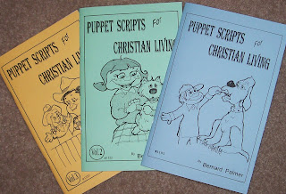

Today's prize (also for sale)
2/6/2011
{kind=link}

Bernard Palmer was one of America's best loved writers, especially well known for his Christian books for children. I was thrilled when he came to us and asked if he could write some puppet script books for publication by Maher Studios. I suggested he write a series of scripts for just two puppets so they could be used by the solo puppeteer, or adapted easily for ventriloquist performance as well. These three books were the result. The script subjects are designed to help primary age children discover proper solutions to real life problems. Optional follow up questions are provided for each script.
Vol. #1 - Subjects: Not Obeying, Being Jealous, Breaking Promises, Cheating, Sportsmanship, Breaking Things, Not Doing Your Share of the Work, and (very practical and relevant) Let's Not Play With Him!
Vol. #2 - Subjects: Kindness, Helping Others, Loneliness, Befriending Outsiders, Decision Making, Cheating, Sharing, Standing Firm, and Loving Others.
Vol. #3 - Subjects: Kindness Toward Strangers and Less Fortunate, Saying "I'm Sorry", Obeying Parents, Making Fun of Others, Hurt Feelings, Studying Early, Selfishness, Hurting Others, and Welcoming New Classmates or Neighbors.
These are subjects that can be appropriately adapted to the non-church setting as well. For a limited time I'm selling the set of three books (new) for only $10.00 postpaid. Contact Mr. D.
And I'm awarding one free set via drawing today to: Buzz Lawrence.